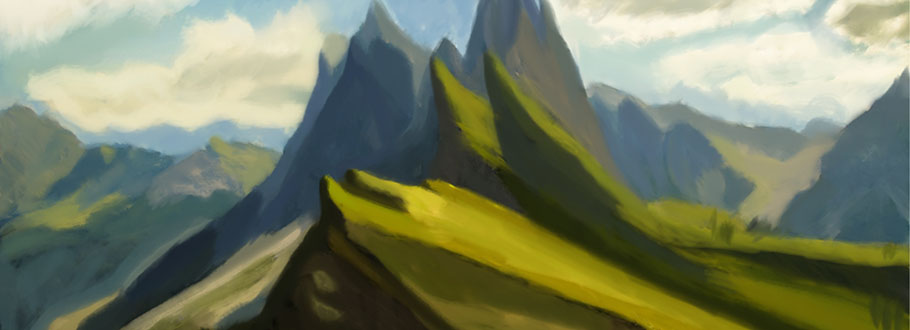

David Marshall
Bio
As of the creation of this site, I am currently 20 years old I was born in London Ontario, and I spent the early years of my childhood living in the country outside of London moving back to London for the latter half of elementary school. I have traveled to many countries, all over the US, Cuba, England, Germany, Panama to name a few. In the past to wanted to be an architect, but in my last year in high school, I took a media arts class, and we when we got into animation I knew what I wanted to do. I looked for an animation course, and I saw the advanced 3D animation course, so I signed up for graphic design at Fanshawe, and the workload hit me like a truck. I barely managed to scrape by a passing grade. Then during summer break, I was referred to taking Interactive Media Design, and here I am.
Hobbies
My hobbies are as follows
- Art
- Playing Piano
- Role Playing Games
- Video Games
- Martial Arts
- Hiking
- Photography
Works
Art
Designs and Typography